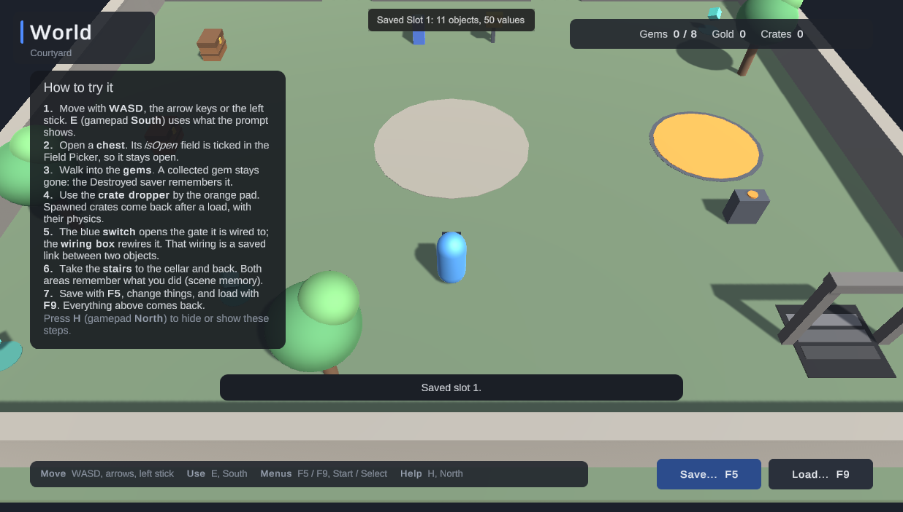

Walkthrough: your first save
Make one object remember its state and see it come back, without code, in about five minutes. The Quick Start is the short version.
1. Open the Start window #
After Shipready is imported, the Start window opens by itself. Any time later, choose Tools → Shipready → Saves → Start.

Open the scene you want to test in. The strip at the top checks five things a first save needs. Click the button under each one that is not green yet:
- Create makes Shipready's settings in
Assets/RareGeometryData/Shipready, outside Shipready's folder, so Shipready updates never overwrite them. - Save scene saves the open scene. A load re-opens the scene the save was made in, and only a saved scene can be re-opened.
- Add (Build Settings) lists the scene, so a build can load it too.
- Add (hotkeys) puts the save menu and the F5 / F9 test hotkeys in the scene. The keys work in the Editor only.
- Import (menu text) adds TextMesh Pro's essential resources, so the menu shows its text.
Each fix except Import is one step on Edit → Undo.
2. Pick what should be remembered #
Click Make objects remember their state. Select a door, a chest or a crate in the Hierarchy (hold Ctrl for several) and click Make the selected objects remember their state.
Each object gets a Saveable component. Select one: the first line of its Inspector says what it saves, for example "Saves position, active state and whether it was destroyed."

To save a value from one of your scripts, such as whether a chest is open, tick it under Values from your scripts. Only fields Unity itself saves are offered: public fields and fields marked [SerializeField].
If the script sets that value in Start, the Saveable warns you: Shipready restores values before Start runs, so set starting values in Awake or in the field's declaration.
Save the scene (Ctrl+S).
3. Save, change, load #
- Press Play.
- Press F5 and click Save on Slot 1.
- Change something: open the chest, or drag the crate somewhere else in the Scene view.
- Press F9, click Load on Slot 1 and confirm.
A note appears at the top of the Game view after each save and load:


If something was skipped, the note says which object and why, with a code such as SK130. Click the note to open the full report in the Save Inspector.
4. Look inside the save #
Tools → Shipready → Saves → Save Inspector lists every save file. Click one to open it as a tree: file, category, scene, object, value. Your object is under World, by name.
When something does not come back #
- F5 and F9 do nothing: the Start window's strip shows No hotkeys or Hotkeys off; click its button.
- "Saving is not available yet." in the menu: there are no settings yet; click Create.
- A value resets right after a load: a script sets it in
Start; move that line toAwake.
Every message from Shipready starts with [Shipready] and has a code with its own entry in Troubleshooting.
Next: World objects shows pickups, spawned objects and links between objects.